Sealed and sent. Expect a handwritten reply within a week.
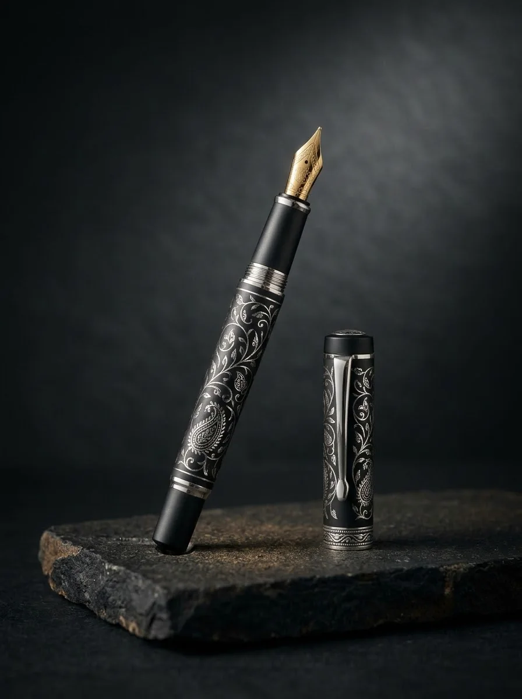
Bidri
Bidar, Karnataka
Blackened zinc, inlaid with pure silver wire in a floral pattern.
₹48,000
The Bidri Edition
Fountain pens inlaid, enamelled and carved by hand in six craft towns of India. Scroll, and watch one come apart.
Zinc alloy darkened with soil from the old fort walls, then inlaid with pure silver wire, one petal at a time.
Every Ankan is fitted, inked and written with by the craftsman who made it, before it leaves the bench.
An 18 karat gold nib is tipped with iridium, then held to a spinning wheel until the line it lays down is exactly the one you asked for. It takes our nib master about three hours. Then he writes with it, and grinds again.
Draw on the sheet. Each grind lays ink differently: a stub thickens downstrokes, an italic changes with the angle of your hand.
Draw here
Type a name, choose an ink, and our nib will write it for you.
Every barrel is made by a family that has practised its craft for generations. We only design the nib, the fit and the balance.

Bidar, Karnataka
Blackened zinc, inlaid with pure silver wire in a floral pattern.
₹48,000
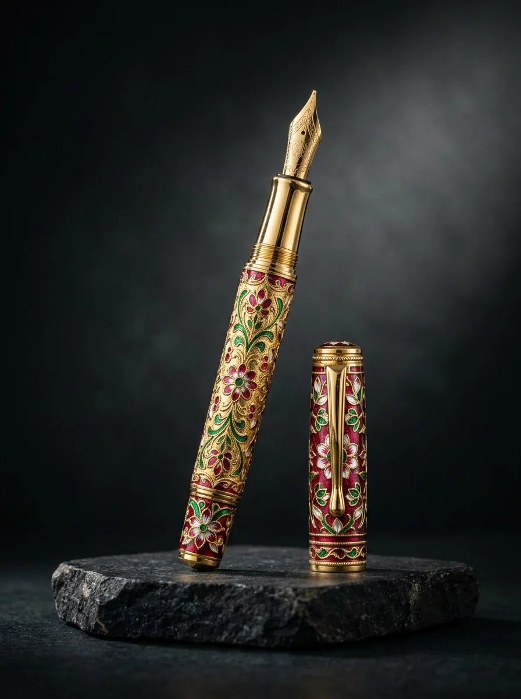
Jaipur, Rajasthan
Kiln-fired enamel in jewel colours over engraved silver, fired seven times.
₹56,000
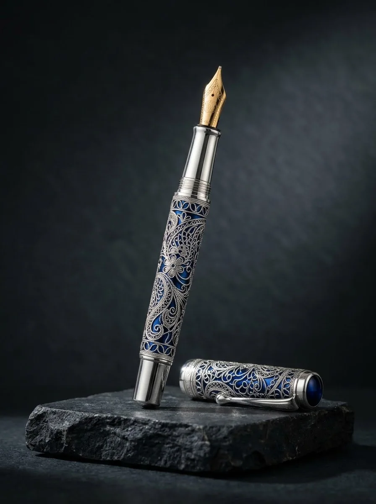
Cuttack, Odisha
Silver filigree drawn finer than hair, coiled and soldered by hand.
₹64,000
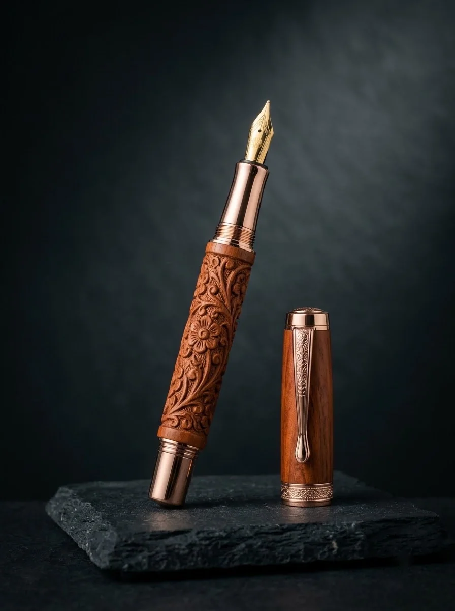
Mysuru, Karnataka
Carved from a single fragrant billet; it still smells of sandal years later.
₹32,000
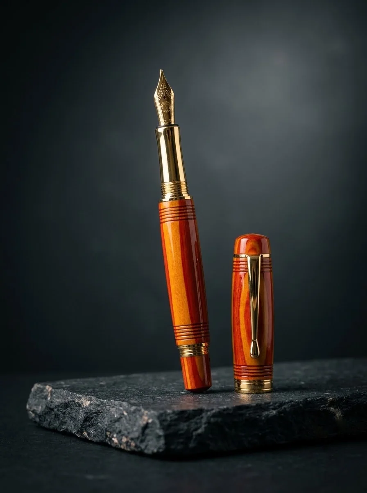
Channapatna, Karnataka
Ivory-wood turned on a lathe and polished with lac and screw-pine leaf.
₹18,500
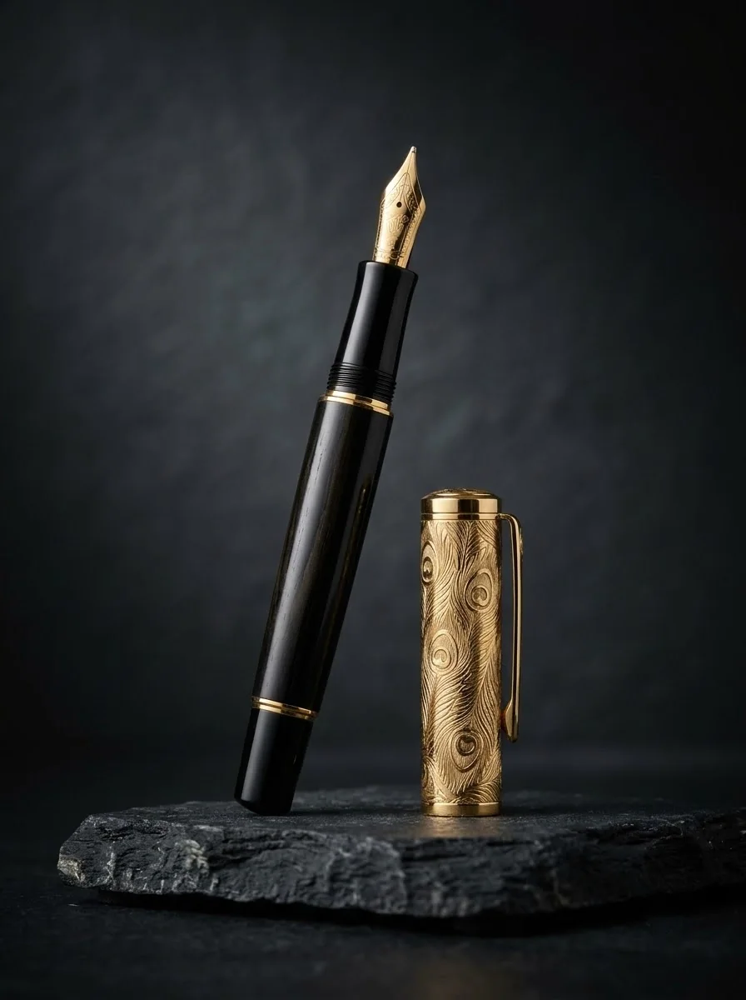
Hoshiarpur, Punjab
Ebony with a hand-chased gold cap from the town's inlay workshops.
₹41,000
Make it yours
Pick a craft, a nib, a grind and an ink. Type the name for the barrel. The price changes as you go, and everything carries into your commission.
Engraved under the clip, by hand
Fine, 0.5 mm · Gold ink
In the hand
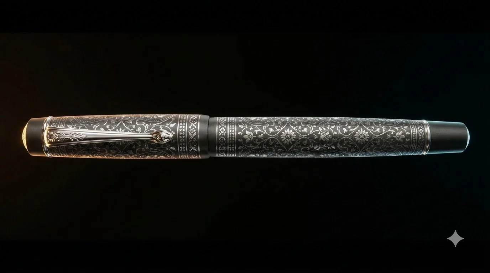
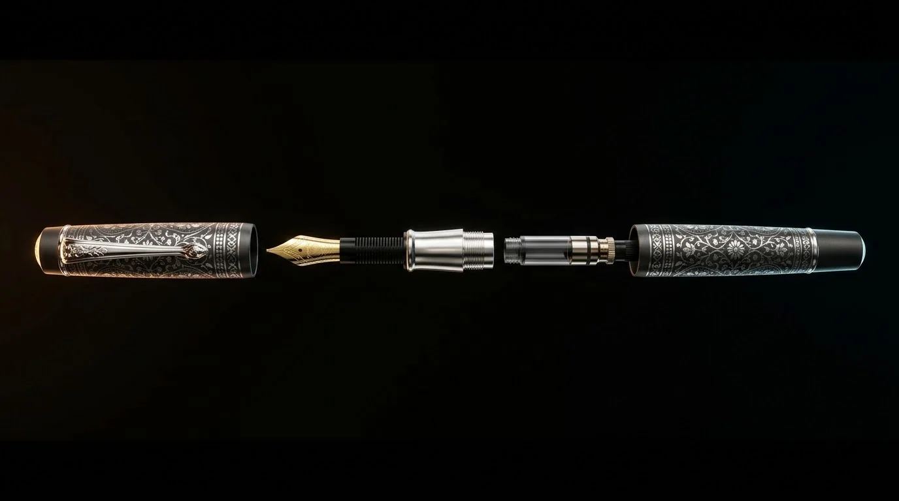
142 mm capped · 168 mm posted · ⌀ 14 mm
A bead of iridium welded to the gold, then ground to your grind. This is the only part that touches paper.
Cut with a blade thinner than a page. Too wide and the nib floods; too tight and it skips.
Ours is a heart, pierced by hand. It lets air in as ink flows out, and stops the nib from cracking.
Scrollwork cut with a burin on the gold. No two Ankan nibs carry the same pattern.
The ritual
Lower the nib into the bottle, past the breather hole.
Turn the knob. The piston rises and the ink follows it up.
Lift, give one drop back to the bottle, wipe the nib, write.
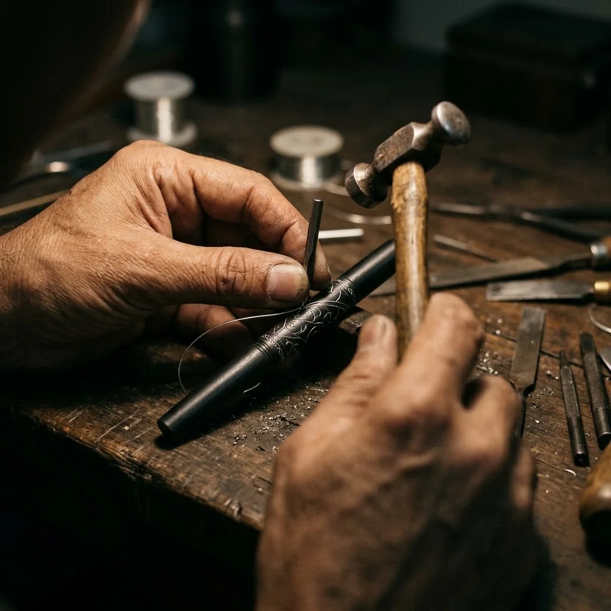
“A machine can make a pen that writes. Only a hand can make one that writes like you.”
Rafiq Ahmed, Bidri craftsman, Bidar. Thirty-four years at the bench.
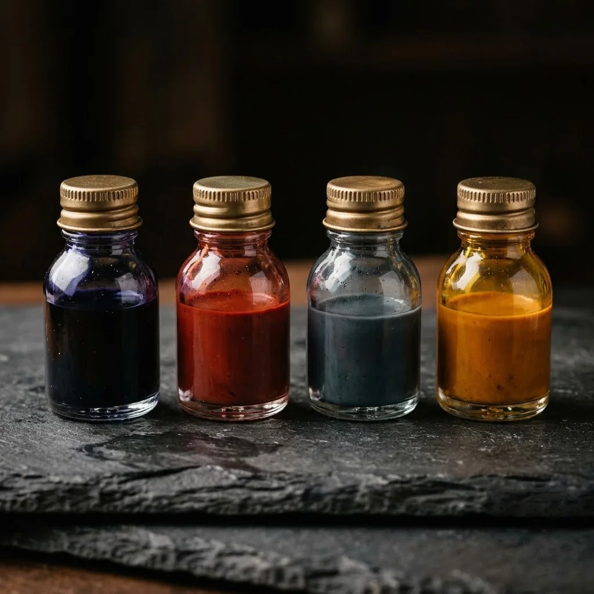
Our four inks are mixed in small batches: Gold, Indigo, Vermilion and Saffron. Each pen ships with the one you choose.
The edition
Each Ankan is numbered on the barrel, signed under the clip, and delivered in a hand-polished rosewood case with a certificate written in ink by the craftsman who made it.
After it leaves the bench
We write to you at each stage: the barrel, the nib, the first line it lays down.
If the line is not yet yours, send it back. The nib master grinds it again, free.
Cleaning, tuning, a new feed if it ever needs one. Always free, for as long as you write.
Every pen travels in its hand-polished case with a bottle of the ink you chose.
Yes. Nib units screw out of the section, so we can fit a different grind or metal later. Grind changes are free in the first sixty days.
Any bottled ink made for fountain pens. Avoid India ink, calligraphy ink and anything with shellac; they dry inside the feed.
Every few fills, draw up clean water and push it out a few times until it runs clear. Let the nib dry nib-down on a cloth. Never use alcohol on the barrel.
Bidri does not; it is already darkened. Silver and filigree slowly warm to a soft patina. A dry polishing cloth comes in the case.
In this concept, yes: insured delivery to most countries, with duties shown before you confirm.
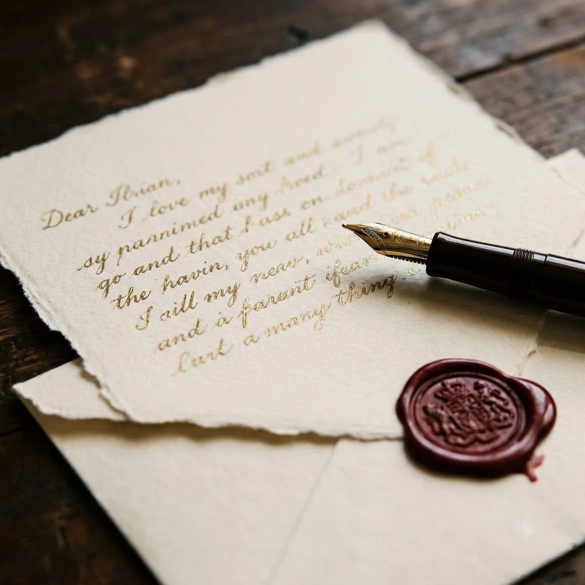
Tell us whose name it is for. A craftsman will write back to you by hand.
Sealed and sent. Expect a handwritten reply within a week.